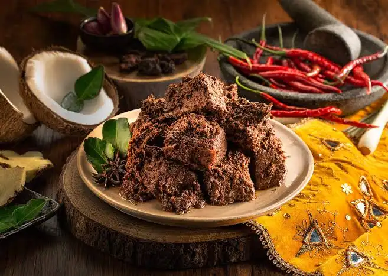
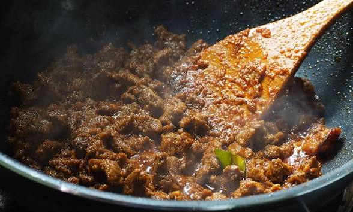
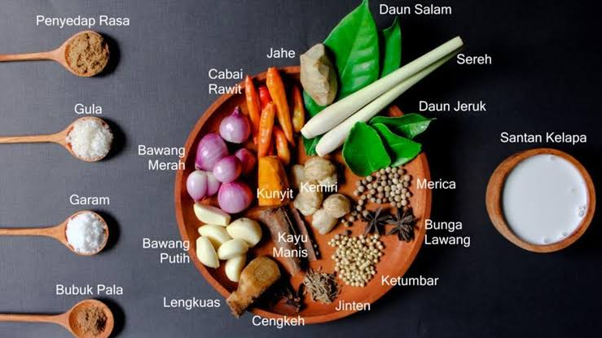

🌟 PEMBUKAAN:
Siapa sih yang enggak suka rendang? Potongan daging empuk dengan bumbu hitam yang gurih ini selalu sukses bikin nambah nasi [indonesiakaya.com]. Saking enaknya, makanan asli Minangkabau ini sampai terpilih jadi salah satu makanan terbaik di dunia, lho..
Tapi, tahu enggak? Di balik rasanya yang juara, ternyata mempunyai cerita yang jarang orang tahu.
🍳 ISI:
Banyak yang mengira rendang itu nama dagingnya. Padahal, kata rendang berasal dari kata randang. Artinya, teknik memasak lambat.
Daging dimasak bareng santan dan rempah-rempah di atas api kecil. Proses ini makan waktu sampai 6 jam lebih! Selama itu pula, wajannya harus diaduk terus tanpa henti supaya santannya mengering dan bumbunya berubah jadi butiran hitam yang gurih banget. Di sinilah kesabaran kita diuji.

Sejarah & Filosofi:
Rendang itu sudah ada dari abad ke-16. Dulu belum ada kulkas buat mengawetkan makanan. Karena orang Minang suka merantau jauh naik kapal, mereka butuh bekal yang awet.
Nah, rendang kering inilah solusinya. Karena dimasak sampai kesat, rendang bisa tahan lebih dari sebulan tanpa pengawet buatan sama sekali. Kreatif banget, kan?
Selain jadi bekal, bahan-bahan rendang juga punya arti buat masyarakat adat:
- 🥩 Daging: Simbol buat menghormati para pemimpin adat.
- 🥥 Santan Kelapa: Simbol kebersamaan para kaum pintar.
- ️ Cabai: Simbol ketegasan para pemuka agama.
- 🌿 Bumbu Rempah: Simbol kekompakan masyarakat yang berbeda-beda tapi tetap rukun.

Berbagai rempah-rempah pilihan yang menjadi rahasia kelezatan rendang
🔥 Tiga Tahapan Memasak:
Tahukah kamu? Proses memasak yang panjang dan bertahap ini menghasilkan tiga tingkatan kematangan yang berbeda. Supaya kamu tidak salah pilih saat memesan di Rumah Makan Padang, yuk kenali tiga tahapan berikut ini:
- 🥣 Gulai: Tahap awal pas kuahnya masih encer dan berwarna kuning kemerahan.
- 🍲 Kalio: Tahap pas kuah sudah mengental, berminyak, dan warnanya cokelat keemasan.
- 🍖 Rendang Sejati: Tahap akhir ketika kuahnya sudah habis total. Yang tersisa cuma bumbu kering warna cokelat gelap kehitaman yang nempel erat di dagingnya.